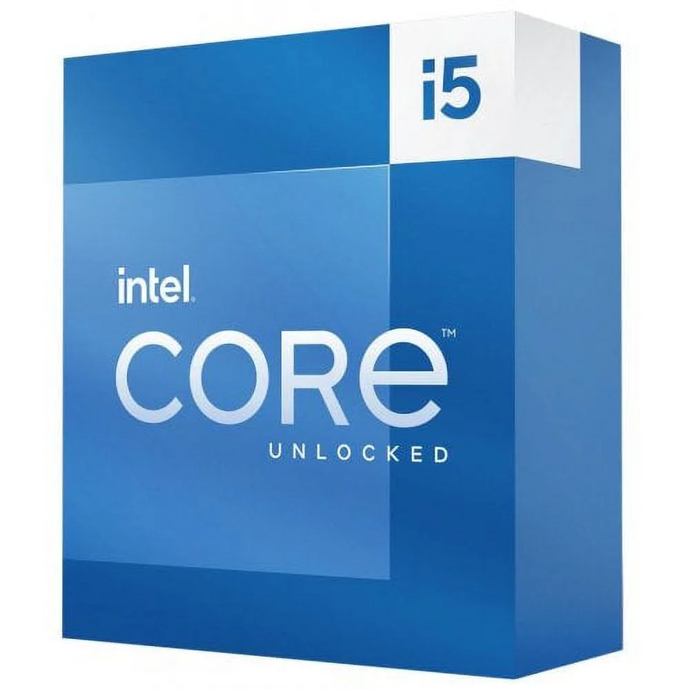
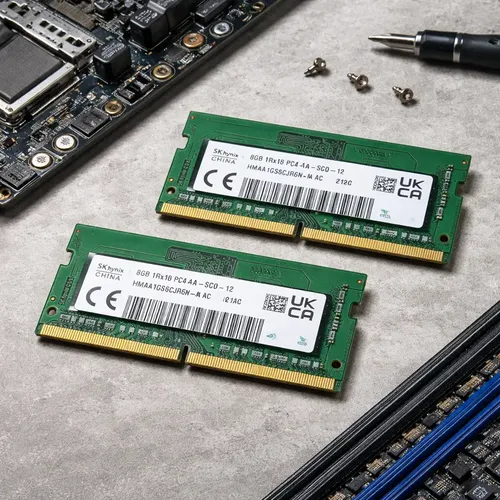

1. Procesador (CPU)
Para trabajo, lo primero que miramos es el procesador, porque de él depende qué tan bien se van a manejar los programas de oficina, navegación y multitarea.

Si el trabajo es de oficina con un Ryzen 5 o Intel i5 alcanza de sobra.
2. Memoria RAM
Con 16GB ya se puede trabajar cómodo con varias pestañas y programas abiertos al mismo tiempo.

3. Almacenamiento y Pantalla
Un SSD de 500GB alcanza para el sistema. Se sugiere invertir en un segundo monitor para aumentar la productividad.